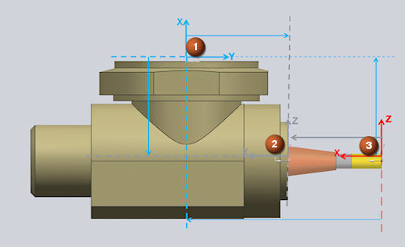

You can now access junctions, such as the machine zero junction, the tool pocket junctuion, and the tool tip junction, in a postprocessor by using Tcl procedures. An example is included in the file simulation_ini.tcl file in the Sinumerik postprocessor folder of the new sim16_mill_headchange machine in the ${UGII_CAM_LIBRARY_INSTALLED_MACHINES_DIR} folder.
|
 |
|
(1) Device Mount Junction |
/********************************************************************/ /* * Syntax: MOM_ask_machine_zero_junction_name * * This command returns the name of the Machine Zero Junction. * Global variable mom_sim_result will also contain the result. */ /********************************************************************/ /********************************************************************/ /* * Syntax: MOM_ask_init_junction_xform jct_name * * This command fetches the transformation matrix of the
* given Junction (name) * w.r.t the absolute coordinate system (ACS), where * * mom_sim_result : matrix (list of 9) * mom_sim_result1 : origin (list of 3) * * * Important note: Transformation returned is of the initial * state of the Junction before the * machine makes any movement at all. */ /*------------------------------------------------------------------*/
|
Note |
You should verify the existence of new commands if you using your postprocessor with an earlier version of NX. There is a built-in procedure to test the existence of a command. # Verify that a new command exists
if { ! [CMD_EXIST a_command ] }
{
a_command
}
|
You can use these procedures to make your posts more versatile for machine tool simulation.
|
Application |
Post Builder |
|
Location in dialog box |
Program & Tool Path→Custom Command→Import |